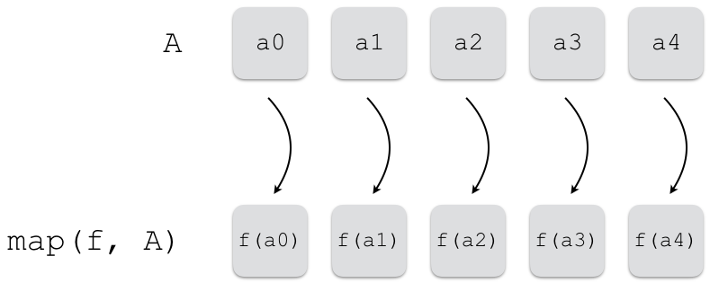
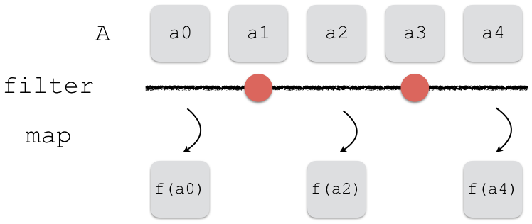

les itérations - suite¶
compréhensions¶
très fréquemment on veut construire un mapping
appliquer une fonction à un ensemble de valeurs:
map

idem en excluant certaines entrées:
map+filter

compréhension de liste¶
c’est le propos de la
compréhension (de liste):
[expr(x) for x in iterable]
qui est
équivalent à
result = []
for x in iterable:
result.append(expr(x))
compréhension de liste avec filtre¶
si nécessaire on peut ajouter un test de filtre:
[expr(x) for x in iterable if condition(x)]
qui est
équivalent à
result = []
for x in iterable:
if condition(x):
result.append(expr(x))
compréhensions de liste - exemple 1¶
# la liste des carrés
# des entiers entre 0 et 5
[x**2 for x in range(6)]
[0, 1, 4, 9, 16, 25]
# si on décortique
result = []
for x in range(6):
result.append(x**2)
result
[0, 1, 4, 9, 16, 25]
compréhensions de liste - exemple 2¶
# la liste des cubes
# des entiers pairs entre 0 et 5
[x**3 for x in range(6) if x % 2 == 0]
[0, 8, 64]
# si on décortique
result = []
for x in range(6):
if x % 2 == 0:
result.append(x**3)
result
[0, 8, 64]
compréhension de liste - imbrications¶
on peut imbriquer plusieurs niveaux de boucle
la profondeur du résultat dépend du nombre de
[
et pas du nombre defor
# une liste toute plate comme résultat
# malgré deux boucles for imbriquées
[x+10*y for x in (1, 2) for y in (1, 2)]
[11, 21, 12, 22]
compréhensions imbriquées - exemple¶
l’ordre dans lequel se lisent les compréhensions imbriquées: il faut imaginer des for imbriqués dans le même ordre
[x + 10*y for x in range(1, 5)
if x % 2 == 0
for y in range(1, 5)
if y % 2 == 1]
[12, 32, 14, 34]
# est équivalent à
# (dans le même ordre)
L = []
for x in range(1, 5):
if x % 2 == 0:
for y in range(1, 5):
if y % 2 == 1:
L.append(x + 10*y)
L
[12, 32, 14, 34]
compréhension d’ensemble¶
même principe exactement, mais avec des {} au lieu des []
# en délimitant avec des {}
# on construit une
# compréhension d'ensemble
{x**2 for x in range(-6, 7)
if x % 2 == 0}
{0, 4, 16, 36}
# ATTENTION, rappelez-vous
# que {} est un dict !
result = set()
for x in range(-6, 7):
if x % 2 == 0:
result.add(x**2)
result
{0, 4, 16, 36}
compréhension de dictionnaire¶
syntaxe voisine, avec un : pour associer clé et valeur
# sans filtre
{x : x**2 for x in range(4)}
{0: 0, 1: 1, 2: 4, 3: 9}
# avec filtre
{x : x**2 for x in range(4) if x%2 == 0}
{0: 0, 2: 4}
exemple : créer un index par une compréhension¶
un idiome classique :
on a une liste d’éléments (beaucoup, genre $10^6$)
on veut pouvoir accéder en temps constant à un élément
à partir d’un idsolution: créer un dictionnaire - qu’on appelle un index
(comme dans les bases de données)
# créer une table qui permet un accès direct à partir du nom
personnes = [
{'nom': 'Martin', 'prenom': 'Julie', 'age': 18},
{'nom': 'Dupont', 'prenom': 'Jean', 'age': 32},
{'nom': 'Durand', 'prenom': 'Pierre', 'age': 25},
]
index = {personne['nom']: personne for personne in personnes}
index
{'Martin': {'nom': 'Martin', 'prenom': 'Julie', 'age': 18},
'Dupont': {'nom': 'Dupont', 'prenom': 'Jean', 'age': 32},
'Durand': {'nom': 'Durand', 'prenom': 'Pierre', 'age': 25}}
# le concept est le même que dans une base de données
# en termes d'accès rapide à partir du nom qui jour le rôle d'id
index['Martin']
{'nom': 'Martin', 'prenom': 'Julie', 'age': 18}
expression génératrice¶
performance des compréhensions¶
la compréhension n’est pas l’arme absolue
elle a un gros défaut, c’est qu’on va toujours :
parcourir tout le domaine
et allouer de la mémoire
au moment où on évalue la compréhension,
i.e. avant même de faire quoi que ce soit d’autre
finalement c’est exactement la même discussion que itérateur vs itérable
e.g. quand on avait comparé range() avec une liste
expression génératrice¶
ça se présente un peu comme une compréhension de liste
mais avec des
()à la place des[]supporte les
ifet les imbrications
exactement comme les compréhensions
data = [0, 1]
# compréhension
C = [x**2+y**2 for x in data for y in data]
for y in C:
print(y)
0
1
1
2
# genexpr
G = (x**2+y**2 for x in data for y in data)
for y in G:
print(y)
0
1
1
2
les genexprs sont des itérateurs¶
les objets construits avec une expression génératrice sont de type
generatoren particulier ce sont des itérateurs
# compréhension
C = [x**2 for x in range(4)]
C
[0, 1, 4, 9]
# genexpr
G = (x**2 for x in range(4))
G
<generator object <genexpr> at 0x7f5e701422e0>
# une compréhension est une vraie liste
C2 = [x**2 for x in range(100_000)]
import sys
sys.getsizeof(C2)
800984
# les genexprs sont des itérateurs
# et donc sont tout petits
G2 = (x**2 for x in range(100_000))
sys.getsizeof(G2)
112
compréhension ou genexpr ?¶
les compréhensions de dictionnaire et d’ensemble sont souvent justifiées
par contre, pour les listes: toujours bien se demander
si on a vraiment besoin de construire la listeou si au contraire on a juste besoin d’itérer dessus
(souvent une seule fois d’ailleurs)
si on a vraiment besoin de cette liste
alors la compréhension est OKmais dans le cas contraire il faut préférer un itérateur
c’est le propos de l’expression génératricequi souvent revient à remplacer
[]par()
(ou même juste enlever les[])exemple…
apprenez à bien choisir entre
compréhension et genexpr
(les deux sont utiles)
# remplissons une classe imaginaire
from random import randint
matieres = ('maths', 'français', 'philo')
def notes_eleve_aleatoires():
return {matiere: randint(0, 20)
for matiere in matieres}
# ici je crée une compréhension; pourquoi ?
notes_classe = [notes_eleve_aleatoires() for _ in range(4)]
notes_classe
[{'maths': 3, 'français': 16, 'philo': 8},
{'maths': 19, 'français': 14, 'philo': 20},
{'maths': 1, 'français': 13, 'philo': 9},
{'maths': 18, 'français': 6, 'philo': 6}]
# pour calculer la moyenne de la classe en maths
# pas besoin de garder les résultats intermédiaires
# du coup, on fabrique une genexpr
# en toute rigueur il aurait fallu écrire ceci
sum((notes_eleve['maths'] for notes_eleve in notes_classe)) / len(notes_classe)
10.25
# mais la syntaxe nous permet de nous en affranchir
# (remarquez une seul niveau de parenthèses, et l'absence de [])
sum(notes_eleve['maths'] for notes_eleve in notes_classe) / len(notes_classe)
10.25
la partie sur les fonction génératrices a été déplacée dans le cours #7